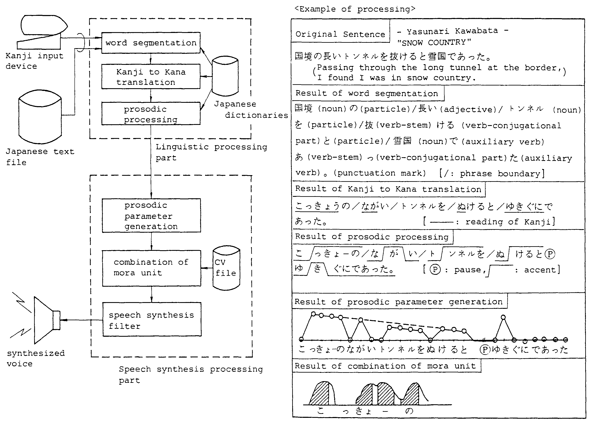
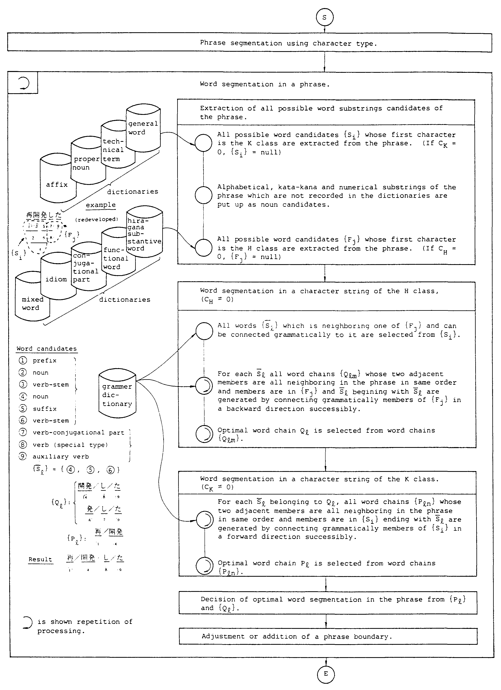
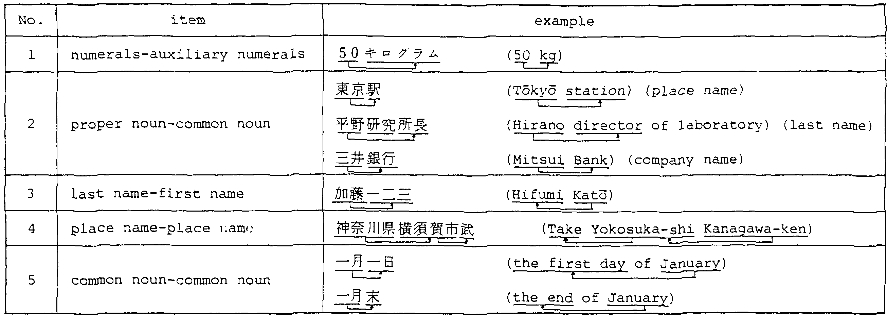
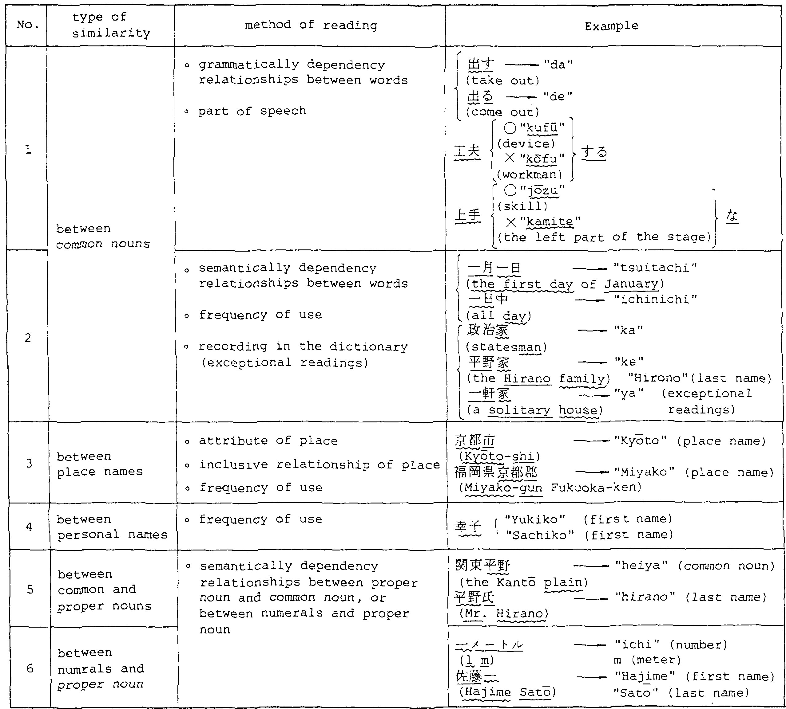

We have succeeded in developing a Japanese-text-to-speech-system that
is capable of reading out ordinary Japanese sentences such as those
found in newspapers and novels in natural synthesized voice.
A Japanese-text-to-speech-system is more difficult to realize than a
comparable system for English because the linguistic processing of
Japanese is vastly more difficult.
The increased difficulty stems from at least two reasons:
(i) Ordinary Japanese sentences are not segmented into words, unlike
their English counterparts.
(ii) Japanese has several kinds of script such as Kanji (ideogram: 山,
川, 花, ...), and two types of Kana (phonogram: あ, い, う, ..., ア,
イ, ウ, ...), in addition to aiphanumerics.
Moreover, since each Kanji is an ideogram, usually having several
possible readings, it is necessary for a
Japanese-text-to-speech-system to give the reading of Kanji that is
appropriate to the context.
These obstacles have prevented the development of a complete
Japanese-text-to-speech-system up to now.
We realized a complete Japanese-text-to-speech-system by developing
new linguistic processing techniques to identify a Japanese word in a
sentence and give the proper Kanji reading.
A Japanese sentence consists of a series of phrases. A phrase, in turn, is composed of a series of words as follows:
| <phrase>:: = | <substantive word> | <substantive word> <functional word string> |
| <substantive word>:: = | noun | verb | adjective | abverb | conjunction | interjection |
| <functional word sfcring>:: = | <functional word>1, ----- , <functional word>n |
| <functional word>:: = | particle | auxiliary verb |
Sentences are not segmented into phrases, nor are phrases segmented into words. That is, there is no space between words to explicitly identify them.
The order of phrases in a Japanese sentence has more freedom than in English. The case of a noun in a sentence is indicated by the following particle. Verbs, adjectives are auxiliary verbs conjugate. A Japanese verb, itself does not express tense, mood or voice, all of which are denoted by the auxiliary verb concatenated to the verb. In a phrase, the order of the auxiliary verb and particle follows grammatical rules. Fig.l shows an example of the sentence structure in Japanese and English.
|
Japanese uses several kinds of script: Kana (hira-gana, and kata-kana), Kanji, and aiphanumerics. Kana characters are phonograms. Hira-gana is used mainly for functional words, conjugational parts, formal nouns, conjuctions and so on. Kata-kana is used for foreign words which are mainly nouns.
Kanji were originally ideograms denoting Chinese words, but they have been used to denote Japanese words since the 5th Century A.D. Each kanji usually has several readings as follows:
| (i) | A Chinese reading: as an ideogram denoting a Chinese word. |
| For example: 花("ka"; flower) | |
| (ii) | A Japanese reading: as an ideogram denoting a Japanese word. |
| For.example: 花("hana"; flower) | |
| (iii) | An idiomatic reading: an exceptional reading used for an idiom or a proper noun. |
| For example; 一("hajime"; a man's first name) |
Kanji are used mainly for nouns, verb stems and adjective stems. A Japanese newspaper or a novel uses usually more than two thousand Kanji.
The reading of a Kanji is determined by the word. Therefore, to give the correct reading, it is first necessary to identify the word of which that Kanji is a member. One noticeable characteristic of Japanese is that nouns are usually used in a compound form as a compound word. That is, many nouns are connected to form a new compound noun. It was impossible as well as impractical to record all compound words in the dictionary compiled for our system.
To read a Japanese sentence in a natural way, following major problems had to be solved:
| (i) | To give Kanji as well as alphanumerics the right reading. |
| (ii) | To give the proper accent. |
Essentially these problems were solved by preparing special dictionaries that give the readings and standard accent for each word. To make this possible, it was necessary to develop a system that could segment a sentence and a compound word into words which are recorded in the dictionary.
The Japanese-text-to-speech-system shown in Fig.2 has been realized by combining the linguistic processing and speech synthesis processing using the LSP-CV method (1). The new linguistic processing techniques required for a computer to translate ordinary Japanese sentences into natural synthetic voice are discussed in the following sections.
|
 |
In the system, the twelve dictionaries listed in Table 1 are used. The dictionaries, altogether contain about 300,000 words. The outline of the word segmentation process in a sentence is shown in Fig.3.
| dictionary name | contents | example of contents | |
| grammar dictionary | grammatical connection rules between words | ||
| functional word dictionary | all conjugational forms of particles and auxiliary verbs, and affixes | 走った (ran) | |
| conjugational part dictionary | all conjugational parts of verbs and adjectives | 走った (ran) | |
| hira-gana substantive word dictionary | substantive words written in hira-gana | きのう (yesterday) | |
| idiom dictionary | hira-gana strings denoting mood, tense, etc. | 走っている (running) | |
| mixed word dictionary | mixed words written in hira-gana and kanji (begining character of word is hira-gana) |
けん制 (check) | |
| affix dictionary | affixes written as one kanji | 大会社 (big company) | |
| auxiliary numerals dictionary | auxiliary numerals | 1年 (one year) | |
| general word dictionary | general words | 単語 (word) | |
| technical term dictionary | technical terms, abbreviations | OPEC | |
| proper noun dictionary | place names | place names | 東京 ("Tokyo") |
| last names | last names | 佐藤 ("Sato") | |
| first names | first names | 一 ("Hajime") | |
| company names | company names | 三菱 ("Mitsubishi") | |
| kanji dictionary | kanji (about 6500) | 山, 川, 花, …… | |
|
 |
We classify Kanji, Kata-kana, and aiphanumerics in the K class, hira-gana in the H class, punctuation marks and symbols in the T class.
To segment a sentence into words, we first segment it into phrases using the following algorithm. As mentioned before, nouns, verb stems and adjective stems as the main substantive words in Japanese sentences are written normally using characters of the K class, functional words connected to substantive words and conjugational parts connected to verb stems or adjective stems are written using characters of the H class. Thus, the system, as the first guess, assumes that transition points of H → K, T → K, T → H represent phrase boundaries (2).
A phrase boundary in a phrase is adjusted or is newly set up in the word segmentation process, when the system recognizes a word such as a mixed word written in hira-gana and kanji and containing a transition point of H → K in the character string of the word (e.g. "けん制"; check), a substantive word contained in a character string of the H class (e.g. "きょう"; today), or a substantive word contained in a character string of the K class (e.g. "昨日私は "; yesterday , I ...).
We define character string of the K class and a character string of the H class as CK, CH respectively. After the phrase segmentation process in section 2.1, one of the following three kinds of phrases results.
| (i) | CK ・CH |
| (ii) | CK |
| (iii) | CH |
If CK contains a compound word or a series of substantive words written in kanji (e.g. a verb stem succeeded by adverb), CK contains multiple words. To extract all possible word candidates in a phrase the dictionaries are consulted for all substrings in the phrase. Using all possible word candidates in the phrase which are extracted by the above process, word segmentation is done in two processes as shown in Fig.3.
Word segmentation in CH is done first, and possible candidates (we call them word chains), {Qlm}, are generated. If several word chains are generated, we choose the word chain Ql with the least number of segmentations (3).
In the next process, word segmentation in CK is done, and again possible candidates (word chains), {Pln}, are generated. For each Pln we calculate the number of semantically dependency relationships (αln between words as shown Table 2. αln is the number of occurrences of semantically dependency relationships between words in Table 2, for example, if two cases of semantically dependency relationships between words apply to Pln, then αln = 2.
|
 |
The optimal word segmentation or word chain Pl is selected as follows:
| (i) | Let βln be the number of words for word chain Pln, then calculate γln = βln - αln. |
| (li) | Let {Pl} be the word chain which has the smallest γln in {Pln}. |
| (iii) | If there are many such {^Pl} then choose the optimal word chain Pi^ from {^Pl} according to the total frequency of use of words belonging to {^Pl}. |
In the last process, optimal word segmentation in the phrase is decided mainly from {Pl} and {Ql} according to the number of segmentations (3).
By the result of an experimentation, it has been proven that the above mentioned algorithm is able to segment ordinary Japanese sentences into words with an high accuracy.
The reading and accent of a word which has been segmented and recognized are found by consulting the general word, technical term, proper noun and affix dictionaries.
The correct reading of identical characters, for which there are several possible readings, is determined by the part of speech, grammatically and semantically dependency relationships between words, frequency of use and so on. Table 3 shows Method of readings for identical kanji.
|
 |
Readings of numerals and auxiliary numerals change depending on how they are combined, for example, １年("ichi-nen"; one year), １個 ("ikko"; one item), １本("ippon"; one cylindrical object), １人 ("hitori"; one person). Readings of numerals and auxiliary numerals which follow phonemic change rules are given in the auxiliary numerals dictionary and exceptional readings are recorded in the general word dictionary.
An abbreviation, such as "OPEC", which is read as one term, is found by consulting the technical term dictionary, whereas an abbreviation like "EC", where the alphabetical letters are read separately, is found by referring to special table.
Undefinded words which are not recorded in the dictionaries are translated by consulting the kanji dictionary and the characters before and after each kanji and by giving the typical Chinese or Japanese readings for each kanji separately.
Phonemic changes in compound words, for example 会社("Kaisha"; company), 大会社("dai-gaisha"; big company) are processed by using flags in the dictionaries which mark the words that undergo phonemic changes in compound words.
In addition to kanji readings, prosodic information such as accent, pause, and so on are necessary for reading out ordinary Japanese sentences in natural synthesized voice.
The accent for each word is obtained from the dictionaries as explained in section 3. When two or more words are combined, the accent sometimes shifts to facilitate smoother speech. In case a functional word is connected to a substantive word, the accent for the phrase is composed according to the rule for accent change.
A pause is put as a suitable boundary between the two words at proper intervals. Based on the grammatical and semantical connection between two phrases or a compound word composed of multiple members a pause is put at intervals of 15 〜 20 moras which are pronounced without pausing, avoiding boundaries where grammatical or semantical connections between the two phrases or members are strong.
In a 90-day experiment using Japanese newspapers, our Japanese-text-to-speech-system translated ordinary Japanese sentences into kana sentences with an accuracy of over 99.5%*. Translation error was caused mainly by mistranslating proper nouns or new words which were not recorded in dictionary and reading errors for identical characters. Future work will be aimed at enhancing translation accuracy by improving the dictionaries and the processing procedure for identical kanji.
This system will make it possible to provide such new services as an information retrieval system using home telephones. A book reading machine may also be realized in by combining the system with optical character reading technology.
This system will contribute to improving the man-machine interface between humans and computers, and is one step forward the development of an intelligent computer capable of conversing with humans by means of natural languages.
We would like to thank SANSAIDO Co., Ltd. for permitting to use the magnetic tape of "SANSEIDO's SHINMEIKAI Japanese dictionary (Second Edition)". We also would like to thank members of speech synthesis group in speech processing systems section for developing speech synthesis processing part.
| number of characters bringing about reading errors | × 100 | |
| ------------------------------------------------------------------------ | ||
| number of characters contained in original sentences | (Return) |